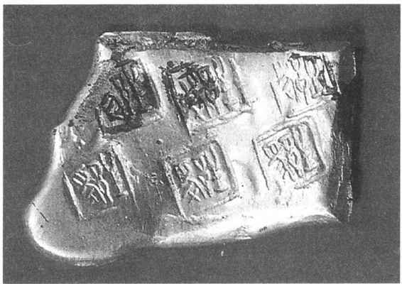
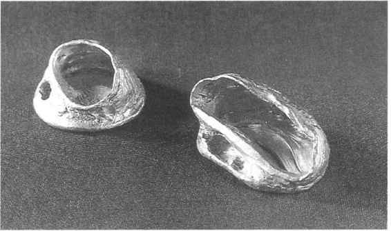
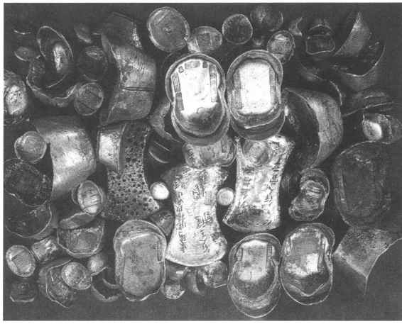

黄金白银，体积小价值大，色泽美丽，不锈不烂，分割也不太困难，是适宜作货币的理想金属。我国古代金银产量较少，只能起部分货币职能作用。金银用作货币，据古籍记载距今大约已有三四千年的历史。《史记》说：“虞夏之币，金为三品，或黄（金）或白（银）或赤（铜）”，“金有三等，黄金为上，白金为中，赤金为下”。［42］《管子》也说：“先王以珠玉为上币，黄金为中币，刀布为下币。”［43］《汉书》则认为，西周初期黄金货币已有了一定的形制，还有法定的货币制度，它说：“太公为周立九府圜法，黄金方寸而重一斤……太公退，又行之于齐。”［44］这些说法表明，商周时期黄金已在发挥货币的作用，在安阳虽曾出土过金贝和包金铜贝，但还缺乏大量考古实证。
春秋战国时期，黄金已是社会经济生活中的重要货币之一了，与早期的铜铸币并行使用。当时大宗交易支付，国与国交往都使用黄金，封建贵族、大商人买卖珍贵的奢侈品，多以黄金论价，如千里马、象床、宝剑、玉卮、狐白裘等，都计值在千金以上。据说韩国有一美人，售价很贵，诸侯们不能买，后由秦国花三千金买去。［45］地主、商人的家产也往往以黄金计值，夸耀为“千金之家”。统治者们朝贡、馈赠、赏赐、贿赂也都使用黄金。如“尉缭说秦王，赂诸侯豪臣，不过三十万金，而诸侯可尽”［46］。当时各诸侯国的铜铸币——布币、刀币、圜钱等都有一定的流通范围，受地域的限制，而黄金则可通行于各国，不受国界限制，成为国际性货币。
黄金作为货币，是一种以重量为单位的称量货币。黄金计算的单位有两种，一是“斤”，合16两；一是“镒”，合20两。实际上这两种单位经常是混用的。楚国的黄金单位叫做“爰”，所以楚国的黄金货币，叫做“爰金”或“卢金”。楚国是多产黄金的国家，所以后世出土爰金也最多。爰金的形制，最初是圆饼或钣状，［47］无铭文。近代还发现有铅饼包以金箔、银箔的冥币，［48］说明爰金在当时已是相当普遍流行的货币了。后来，爰金发展为在金钣或金饼上钤印若干小方格和铭文，使用时根据需要把小方块凿开，以天平称量支付。（图15—15）铭文通常为两个字：一是“爰”字，一是国名或地名，如“郢爰”、“陈爰”、“专爰”、“爰”、“卢金”等。以郢爰最为多见，因郢为楚国都城。卢金是钤有“卢金”二字小圆印的金钣，大约是楚国晚期的金币。卢金二字是表明此币经过化炉精炼，金质足赤的意思。这是因为此时楚国国势衰危，郢爰币值下降，改用卢金二字来维持货币信誉。根据对实物的化验分析，郢爰一般含金量为97%—98%，卢金为94%—95%。［49］爰金在楚国流通的同时，北方诸国行使一种金币叫做“圜金”。形状像圆饼，底部凹，表面隆起，有的似马蹄形，都刻有表示重量的文字和数码符号。但出土实物很少。

图15-15 江苏盱眙出土的爰金
关于早期黄金货币的购买力，古籍中记载的不多，也缺乏与其他币种的比较。《管子》曾记载：“粟贾平四十，则金贾四千。”［50］可以认为，一石粟值40铜币，而4000铜币等于一斤黄金。《管子》又说：“黄金一镒，百乘一宿之尽也。无金则用其绢，季绢三十三，制当一镒；无绢则用其布，经暴布百两当一镒。”［51］有关这方面的资料，还需要进一步发掘和研究。
秦始皇统一全国后，规定黄金为上币，以镒为单位。西汉承袭秦制，黄金仍为法定货币，单位改为斤。这一时期，是中国货币史上使用黄金货币最盛的时代。
当时的货币流通，小宗买卖都使用铜钱，凡价值大和支付额多的交易都以黄金计算。据记载，黄金的使用范围主要的有：赏赐、库藏、朝贡、助祭、算赋、买卖官爵和民间窖藏等。赏赐是黄金数量最大的用途。仅就《汉书》记载，皇帝各次赐金加起来的总量达90万斤，合今天276吨还多。例如，陈平曾以4万斤黄金间于楚；文帝赐周勃金5000斤，宣帝赐霍光7000斤。皇帝娶皇后的聘礼，惯例为黄金2万斤。其次是酎金，这是汉代诸侯为祭宗庙向皇帝贡献的助祭费。按规定，以诸侯封地人口计算，每千人贡金4两，实际加起来就是很大的数量。如果交纳酎金重量不足或成色不好，则犯大不敬罪，王则削县，侯免国。汉武帝时，因酎金问题获罪夺爵的有106人之多。黄金代表财富，西汉皇帝运用酎金及赎罪、罚款、抄家、卖官等手段，搜刮了大量黄金，集中于皇家。汉武帝时，皇室贮藏的黄金有50万斤，约占全国黄金的一半。王莽时期，实行黄金国有，他制定了“宝货”制，使用严刑强逼民众交售（实际是没收）黄金和金制器物，藏于宫中，每万斤为一柜，在他灭亡时还存有六十余柜。［52］
秦汉初期黄金货币没有固定的形状。出土的金饼、金钣，大体有一斤重的和一两重的两类。《汉书》记载，“黄金方寸，而重一斤”［53］。西汉的一斤约合今250克，所以出土的金饼以250克重的最为常见。西汉中山靖王刘胜夫妇墓出土有数十枚小金饼，每枚重量约合当时的一两。［54］汉武帝太始二年（前95年）铸“麟趾褭蹄”，［55］开始统一了黄金货币的形制。北宋沈括曾记述这种金币的形制：“麟趾中空，四傍皆有文，刻极工巧；褭蹄作团饼，四边无模范迹，似于平物上滴成，如今干柿，土人谓之柿子金。”［56］各地西汉墓葬出土实物中，确有一些像马蹄状或兽趾瓣状的金饼，人们称之为马蹄金、麟趾金。（图15—16）此外，还有一种“金五铢”，是1980年陕西咸阳塬下出土的。它的大小形制与西汉五铢铜钱一样，黄金成色与西汉金饼一样，体重九克，比铜钱重一倍多。

图15-16 西汉麟趾金、马蹄金
汉代黄金与铜钱的比价，法定是黄金一斤值铜钱一万。但在民间实际流通中，则因时因地而有高有低。《九章算术》中曾记载：金一斤值钱“六千二百五十”［57］，“金价九千八百”［58］。在战乱年代，黄金价格变化甚大，如王莽失败后的长安三辅一带，曾有“黄金一斤，易豆五升”的现象。［59］
东汉至晋隋期间，黄金愈加贵重，人们对黄金的用途有了很大改变。用于大额支付和商品交易的情况锐减，作贮藏、饰品和其他方面用处的大为增加。像皇帝对臣属的赏赐，西汉215年间赐黄金有一百多次，东汉195年间赐金只有9次，而赐钱、赐物的相应增加，仅赐铜钱的就有64次之多。东汉赐金的数额也很少，总计约为21740余斤，合今5.5吨左右，仅及西汉赐金总数的2%。皇帝赐金少了，臣下献金的也少了，连赎罪也改用缣。把黄金作货币媒介以外的用途，则广泛发展。当时社会风气崇尚奢侈浮华，盛行用金银打造器皿、服饰。汉光武帝的内弟郭况，在家中就蓄有四百多人专门制作金银器物。［60］妇女们用黄金做首饰也很流行，曹植诗“皓腕约金环，头上金爵钗”是其时风尚的写照。同时，两汉之际佛教东传，魏晋以后道教也逐渐盛行，寺观庙宇、佛像、法器多用黄金装饰。北魏天宫寺造佛像，一次就用黄金600斤。特别是战乱频仍，铜钱经常贬值，物价腾贵，人们多以黄金来保存价值，避免损失，这样，黄金就逐渐退出了市场流通范围，成为大家竞相贮存的对象。由于用金数量稀少，黄金的数量名称也起了变化。本来汉代称黄金一斤为“一金”，到了晋代，称“一金”却往往指的是一两了，这是因为使用黄金时用两计算已逐渐习以为常了，而南北朝以后就不再用斤计算了。
唐宋时代，金银制作工艺达到相当高超的水平，黄金用于打造器物、饰品以及佛道法事祭祀、布施等有增无减，黄金的用途更加广泛。与此同时，由于工商业和对外贸易蓬勃发展，以黄金计价、估值以及用于大额赋税、大宗交易的情况又时有发生。杜甫就有“囊虚把钗钏，米尽折花钿”的诗句。由于经济的增长，黄金的货币作用在这一时期又有所上升，但相比之下它作为贮藏、保值的作用仍是主要的。史籍对这方面的记载很多，如“天下金帛皆贮于左藏”［61］等等。元代以后，纸币逐渐流行，黄金则进一步退出流通领域。尤其是明朝，曾明令禁止民间用金银交易，但实行的结果是，白银未能禁止住，而黄金的货币地位则正式取消。
黄金货币的形制，一直是多种式样同时并行的，但不同时期又分别以某一式样为主要形式。东汉以后，除圆饼形外，铤状逐渐多起来。金铤是狭长的金钣，似大臣用的笏，一直流行到唐代。1979年山西平鲁屯军沟曾出土金铤82件，金饼4件，部分刻有唐肃宗乾元年号。［62］南北朝时，黄金制的钱币开始出现，《南史·吕僧珍传》曾有生动的记述。这种金钱，多是仿照当时流通的铜钱的形制而造的。从出土实物看，有些金钱是从国外流入的，如拜占庭金币等等。唐宋时期，金银制的钱币已较普遍，但多用作祭祀、布施、馈赠、殉葬等，与流通中的铜钱有所区别。《旧唐书·玄宗本纪》记载：开元元年（713）九月，宴王公百僚于承天门，令左右于楼下撒金钱。杜甫诗云：“何时重此金钱会，暂醉佳人锦瑟旁。”张祜诗云：“长说承天门下宴，百官楼下拾金钱。”两宋时金银开始以锭的形式出现，这是一种砝码或绕线板的形状，为两端宽、中间窄的亚腰形。元代的金银锭又改为元宝形，即两端尖而翘起。明、清时又有中锭（小元宝形）、锞子（小馒头形）以及滴珠、福珠形状。上述多种形状的黄金，都仍属于称量货币，在使用时需用秤称量，分量重者要进行截凿。
黄金的购买力，东汉以后千百年来一直是比较稳定的。金银比价为1:5左右，维持了相当长时间。至宋初为1:6.52。明中期为1:7—8，明末为1:10左右。清乾隆时为1:14左右，和当时欧洲的比价大体相当。黄金和铜钱、纸币的比价，则由于后者价值经常不稳，而变化较大。
白银和黄金一样，在古代传说时期就已成为人们交换中使用的货币之一了。但由于我国对白银的提炼技术比较落后，因此白银的使用时间应较黄金稍晚。
春秋战国时期，白银铸币已经出现。1974年河南扶沟古城村出土18枚银布币，据考证，其中空首布1枚，约为春秋前期的；5枚短型平首布，约为春秋晚期的；12枚中、长型平首布，约为战国初期的。［63］同年河北平山县战国时中山国墓葬的发掘中，出土了银质贝币数枚，同时出土的还有赵国的刀币，［64］因而可知银贝在中山国也同刀币一样是日常流通的货币。
秦始皇统一币制，对白银是禁止作为货币来流通使用的，所以白银只用于首饰和贮藏。汉代没有明令禁止白银，但由于数量不多，仍主要用于首饰和贮藏，有时也作货币使用于大额支付。汉代白银属于称量货币，一般作饼状或铤状，叫做银饼或银铤，与金饼、金铤形状类似。已知的，西汉曾有过无字银铤、汉景帝“中元二年（前148）银铤”及银砖等物。汉武帝元狩四年（前119），因对匈奴用兵，财政困难，用少府积存的银锡铸造“白金三品”。白金三品是三种银币，一是圆形龙纹币，重八两，值三千铜钱；一是方形马纹币，重六两，值五百铜钱；一是椭圆形龟纹币，“肉圆好方”（即方孔椭圆形），重四两，值三百铜钱。这白金三品银币的发行，仅是一次失败的尝试。由于它作价太高，比实际价值约高出三倍以上，又系银锡合金而无固定成分比例，因而民间纷纷私铸，降低银的成分，使此币大幅度贬值，不利于正常经济生活，仅用了四五年就废止了。两晋、南北朝时，史籍记载中用银的例子逐渐多起来，也有了以银计值的记载。但白银仍不是主要货币，除用于饰品和贮藏之外，人们在赎罪、贿赂、租税、贡奉等方面也有用白银的。银的形制，除银铤外，银质的钱币开始出现，有的类似五铢钱形制，有的可能是对外国银币的仿造，但数量都很少，只起货币某些职能的有限作用。
唐代的货币，主要是绢帛。中唐以后，绢帛货币已不能适应市场交易的需要，其货币作用逐渐趋于衰退。贵金属白银，作为货币逐渐受到人们的重视。本来，唐代的法律不承认白银为合法的货币，但由于交换、支付使用方便，人们多乐于用白银，致使后来唐政府的经费也使用白银了，所以实际上白银货币在唐代已具有多种用途，如：商品交易、租税、赈济、赏赐、贡奉、军费、布施、官俸、债务等等。甚至政府的税法都有用银的规定，如唐税制《租庸调》规定：“丁，随乡所出，岁输绢二匹……非蚕乡，则输银十四两，谓之调。”［65］到唐末、五代时期，白银已成为商品流通中最常见的一种货币，根本改变了过去主要用于饰品和贮藏的状态。不仅用银的范围扩大，而且用银的数量也是空前的。据一些史籍记载，人们进行贡献、济军、贿赂等活动用银，一次往往是数万两或数十万两。
两宋时期，白银的货币性质进一步增强。政府正式规定白银为租税和官俸的法定货币。政府的财政支出中，白银货币占据很大比重，而且日趋增加。北宋真宗天禧末年（1021），政府岁收中白银为八十八万余两，岁支中白银为五十八万余两。［66］到神宗熙、丰年间（1068—1086），岁收中白银已达二百九十余万两，［67］47年间，白银岁收额增加二百多万两，增长2.3倍。南宋孝宗淳熙（1174—1189）中，左藏库对政府禁军百官俸给岁支中白银为二百九十三万余两。［68］可见，南宋每年仅在军饷、官俸方面的用银就比北宋神宗政府全部岁收用银多二万余两。宋代用银范围比唐代更加广泛，民间私人经济交往，也常使用白银。白银在经济中的作用，已超过西汉时的黄金。南宋有的地方发行纸币“会子”也以银为单位，如绍兴七年（1137）川陕宣抚副使吴玠在河池发行的“银会子”即以银计价。但这一时期白银还不是十足的货币，在货币的价值尺度和流通手段方面的职能也还不够充分。如宋代的物价，还都是用铜钱来表示的，人们有白银也还得先兑换成铜钱，然后交换使用。百姓日常生活用银，相对来说还是较少的。
白银货币在唐代通行的形式是银铤。西安唐大明宫遗址曾出土唐玄宗天宝年间的银铤，长市尺九寸六分，宽二寸一分五厘，为笏状长方形的银钣，铭文“重五十两”［69］。在其他地方也发现一种重20两的小银铤。宋代白银货币一般叫做“银锭”，其形状是在铤形基础上，两端为圆弧状，中间较窄，而且在正面记有地名、用途、重量、官吏、匠人名称等。大银锭重50两，小银锭则重量不一，如25两、12两等。宋代也铸造了一些银质的通宝钱币。
在与南宋同时代的金朝，白银已成为主要货币，和铜钱、纸币同时流通使用。金章宗承安二年（1197），铸造了白银的“承安宝货”，这是汉武帝以后第一次出现的政府法定银铸币。它的形制类似银锭，按重量从一两至十两，分为五种银币，一两承安宝货值铜钱二贯。近年来在黑龙江阿城一带曾出土了这种银币。承安宝货由于没有规定固定成分，于是发生大量盗铸掺假，使百姓受到损失，京师商人曾为此罢市，因而到承安五年就停止流通了。但称量性质的银铤、银锭仍继续流通使用。金朝历届政府为了推行纸币交钞，曾经严令限制银价和用银数量，民间贸易强令搭配使用交钞，但商民百姓不予理睬，继续以银论价，乐于用银交易，拒用纸币。
元代以后，白银已成为流通中的主要货币。虽然元、明两朝建国初期都曾经明令民间交易禁止使用白银，而推行纸币。但这种禁令收效甚微，未能阻止白银的流通。白银已成为日常生活中的价值尺度。民间借贷、劳务报酬、物价的表示、日常贸易大都用银，小额的买卖才用铜钱。到后来，政府非但不再禁止，而且本身收税、发放兵饷、官俸也都用银。政府发行的纸币，也以白银为本位。由于人民用银日多，银铺业也有了很大发展，它们不仅从事打造金银首饰器皿，还开办了银钱兑换的业务。在清代，政府明确规定：“以银为本，以钱为末”，政府财政收支一律以银为准，白银成为流通中最主要的货币。白银货币的形制为元宝状，又称宝银，以重量计算。（图15—17）

图15-17 银锭、银元宝
白银货币的流通，在清朝初年是比较稳定的，当时对外贸易出口生丝、茶叶、瓷器等，输入的主要是白银。据统计，嘉庆以前的一百七十余年间（1644—1821），西班牙、荷兰、英、法、美等国输到中国的银元达三亿零六百多万元。道光以后，鸦片贸易使白银大量外流，每年出口白银数千万两，造成国内银荒。另一方面，外国银元制造精致，规格划一，计数比用秤称白银方便得多。人们宁愿以十足的白银换取成色较低的银元使用，以致外国银元在国内市场盛行，缴纳赋税以及商人交易都愿用它。为了适应经济发展的需要，林则徐在任江苏巡抚时就曾试铸过中国自己的银元，每枚重七钱三分，但行用不久即废。以后道光十八年（1838），台湾铸过有寿星图像的“足纹银币”；道光二十四年（1844）福建漳州曾铸造军饷银币。咸丰、同治年间浙江、上海、吉林等地也出现过各种银饼、银币，都是民间或地方政府铸造的，流通时间不长、地区范围不广。光绪十五年（1889）两广总督张之洞正式奏准朝廷，用机器铸造“龙洋”银元。币面中央为“光绪元宝”四字，背面为蟠龙花纹，重七钱二分。龙洋含银九成，与白银等价使用。龙洋出现后，各省也纷纷仿铸。宣统二年（1910）四月，朝廷制订国币则例，规定银元铸造权归于中央，次年五月开始铸造统一的“大清银币”，但几个月后，辛亥革命就爆发了。清政府虽然灭亡，但在社会经济生活中现代铸币银元取代称量货币银两的趋势已经构成。
白银在流通中作为主要货币行使大约有七百一十余年。这一时期白银的购买力，基本上是下降的趋势，其价格变动主要受产量和进出口的影响。例如米价，明初洪武年间每石值银四钱六分，明末崇祯年间每石约需银一两一二钱。清康熙年间每石值银五钱九，清末光绪年间为二两一七。白银与铜钱比价，明初为白银一两值铜钱一千文，到万历年间为五六百文；清初顺治年间为一千四百文，康熙以后约为一千文，嘉庆以后白银外流，银价上涨，道光年间涨至二千文以上，同治年间又降至一千六百文左右。银钱比价的变动，受打击最重的是农民，因他们卖粮收铜钱，而纳税要交白银，如果银价对铜钱上涨五成，即意味着农民的租税负担增加50%，从而引起农民纷纷起义反抗。
谷即指粮食，帛或布帛指纺织品，帛为丝织品的通称，布为麻葛类织品的通称，都是人民赖以生活的衣食之本。我国古代自从有了交换，谷帛就是重要的一般等价物，起着货币媒介作用。谷帛是本身使用价值极强的一种货币，退出交换后即可直接进行消费。因此它最适合商品交换不发达的自然经济环境，或战火纷飞、社会动乱时期交换媒介的需要。即如古代童谣所说：“虽有千黄金，无如我斗粟，斗粟自可饱，千金何所直。”［70］由是几千年来谷帛一直断断续续发挥着货币作用，有时甚至完全代替了其他货币的地位。
周秦以后，据历史记载，谷帛一直是与金属货币并行的重要币种。《汉书·食货志》载：“太公为周立九府圜法：黄金方寸而重一斤。钱圜函方，轻重以铢。布帛广二尺二寸为幅，长四丈为匹。故货宝于金，利于刀，流于泉，布于布，束于帛。”汉代把谷帛作为法定的货币，是政府财政收支的一个重要手段。比如汉代政府的官俸中，就有一部分是以粮食计算的。皇帝的赏赐有时也使用缣帛。《资治通鉴》记载，汉武帝巡狩郡县时，曾赏赐用帛百余万匹。赋税和民间交易也都是钱、帛并用。在王莽末年、东汉晚期和三国时的曹魏，由于社会动乱，粮食和布帛更上升为主要货币的地位，排斥和削弱了铜钱的流通作用。魏明帝以后，恢复了五铢钱，实行了钱帛并行流通。但西晋八王之乱以后，战火连绵，谷帛的货币作用又趋扩大，黄河流域及辽东地区，几乎处于实物交换状态，谷帛取代了铜钱，金银也只作宝藏和装饰之用。东晋和南北朝时期，各国大多是钱币、布帛、米麦同时并行流通。如萧齐时，虽然规定以钱币为主要货币，但在户租中，则三分之二收布帛，三分之一收钱币。萧梁时，规定各种交易“钱帛相半，为制永久”。北魏则一切公私财务收付，如俸饷、税收、赈济、赏罚、借贷等等，都以帛作价，有时还用牲口。北齐规定发放俸饷，以帛、粟、钱各三分之一。唐朝沿袭前代习俗，政府法令明确规定绢帛与钱币并行流通。如开元年间规定，“绫、罗、绢、布、杂货等，交易皆合通用……与钱货兼用，违者准法罪之”，［71］“布帛为本，钱刀是末，贱本贵末，为弊则深”，“自今以后，所有庄宅，以马交易，并先用绢、布、绫、罗、丝、棉等，其余市价至一千以上，亦令钱物兼用，违者科罪”。［72］政府赋税，如《租庸调》的庸、调，也是收绢帛。军费支出，一次用绢帛可达几十万匹。民间交易，大宗小项用绢帛的比用钱的多。日用的柴米油盐也用绢帛买卖。白居易《卖炭翁》诗中描写：“半匹红绡一丈绫，系向牛头充炭值”，即可见一斑。
唐代中叶以后，绢帛的货币作用逐渐衰落。这是由于天下承平较久，商品生产逐渐发展，布帛作为既有交换价值又有使用价值的货币，其局限性较大，如布帛的品质不易划一、一经割截其整体价值就会受损、久藏会变质朽坏等问题越来越突出，因而在流通中逐渐被铜钱所代替。宋代以后，谷帛即逐渐退为生活日用品，仅在社会动乱时偶然发挥交换媒介作用。
关于谷帛货币的规格，谷是粮食的通称，各种谷物一般以斛、升等容量或重量为单位。布帛作为纺织品，其品种很多，如锦、绣、纱、绫、绮、罗、縠、绢、缣、绨、布等都可作货币，其中常见的是：丝织品绢、缣和麻、葛织品布。汉代曾定有规格，即：阔二尺二寸为幅，长四丈为匹，六十尺为端。二匹布抵一匹绢。唐代规定，绢以四丈为匹，布以五丈为端，均宽一尺八寸。在小额交易中，也有割断零碎使用的。
绢帛货币的购买力，在各个朝代都有所不同。唐代贞观初年，一匹绢约值一斗米。玄宗开元十六年（728）规定，每匹绢值钱五百五十文。实行两税法以前，大历年间（766—779），绢价曾涨至三四千文一匹。文宗开成三年（838），扬州白绢每匹660文。宣宗大中六年（852），每匹绢900文。绢价高低与外贸出口也有一些关系。